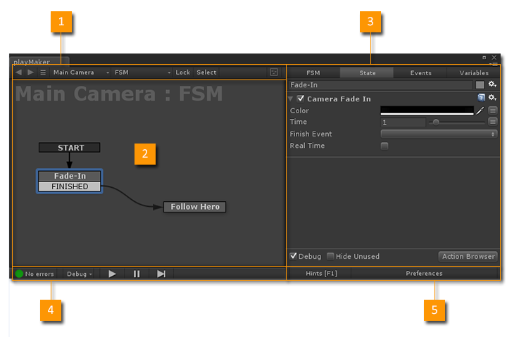

Playmaker Editor
Open the Playmaker Editor from the PlayMaker Main Menu.
The Playmaker Editor is divided into 5 main areas:

FSM selection tools.
2. Graph View
Edit States and Transitions.
Edit the selected FSM/State.
Debug and Play tools.
5. Preferences
Playmaker settings.
Editor Windows
Secondary editor windows found in the Playmaker Main Menu.
Browser to quickly select FSMs.
Browser to quickly select States.
Select and edit FSM Templates.
Context sensitive editing tools.
Preview and add Actions.
View and edit Global Variables.
View and edit FSM Events.
Show FSM runtime state changes in a visual timeline.
View an FSM's runtime log.
View Playmaker Editor info.
PlayMaker Components
PlayMaker components that appear in the Unity Inspector:
The main FSM Component.
A component that manages some GUI features.
Editor Layouts
Playmaker uses standard editor windows that can be docked and added to tabs to organize your workspace. Just drag tabs around and you'll see where they can dock. HINT: Drag the Tab not the Window to dock windows. Remember to save your layout!
Unity docs: http://docs.unity3d.com/Documentation/Manual/CustomizingYourWorkspace.html
See Also: